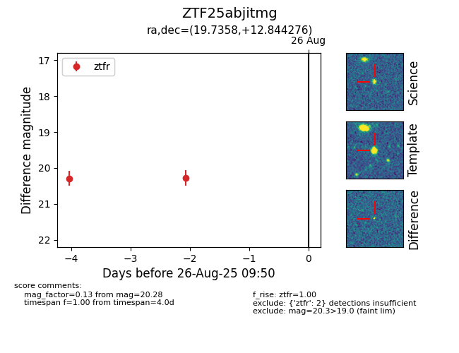

Target ZTF25abjitmg at 2025-08-26 09:50, see:
FINK: fink-portal.org/ZTF25abjitmg
Lasair: lasair-ztf.lsst.ac.uk/objects/ZTF25abjitmg
ALeRCE: alerce.online/object/ZTF25abjitmg
alt names
ZTF25abjitmg (ztf,fink)
coordinates:
equatorial (ra, dec) = (19.7358,+12.84428)
galactic (l, b) = (133.2809,-49.47398)
photometry
last ztfr=20.28
2 ztfr detections
